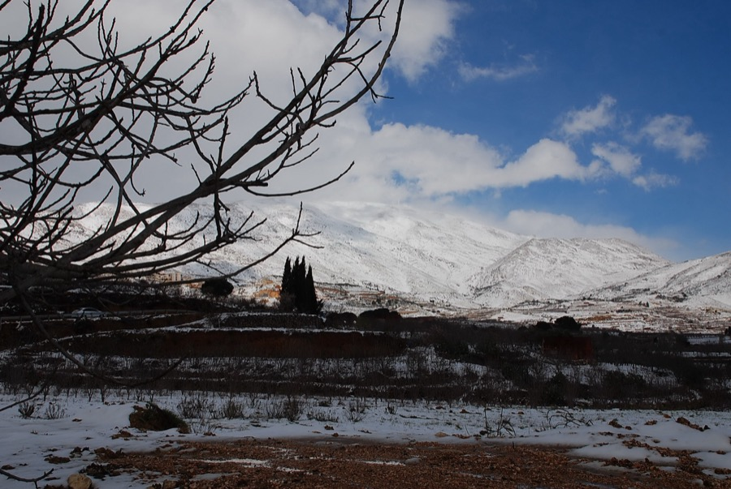
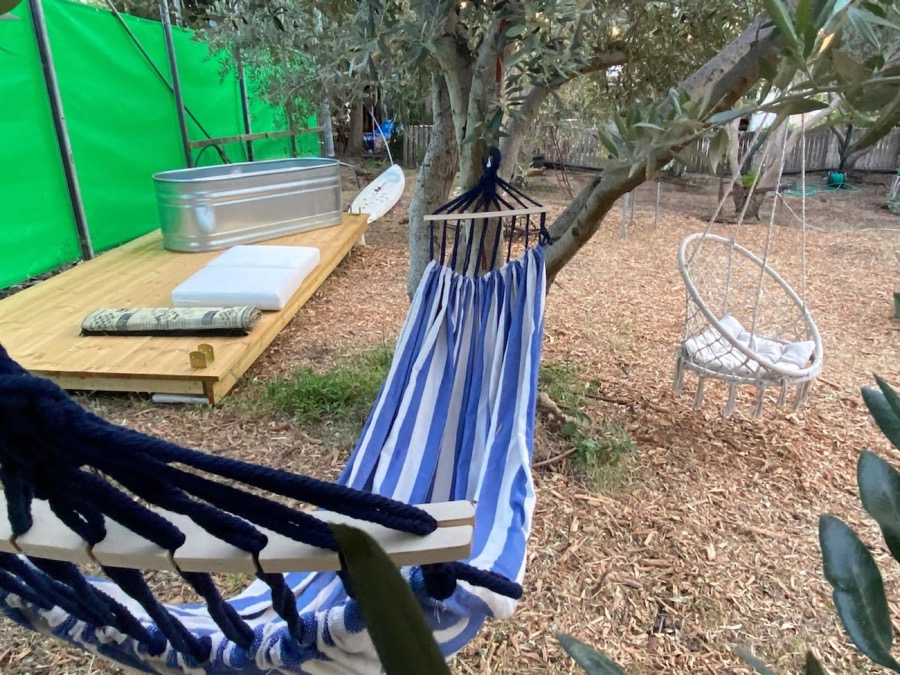
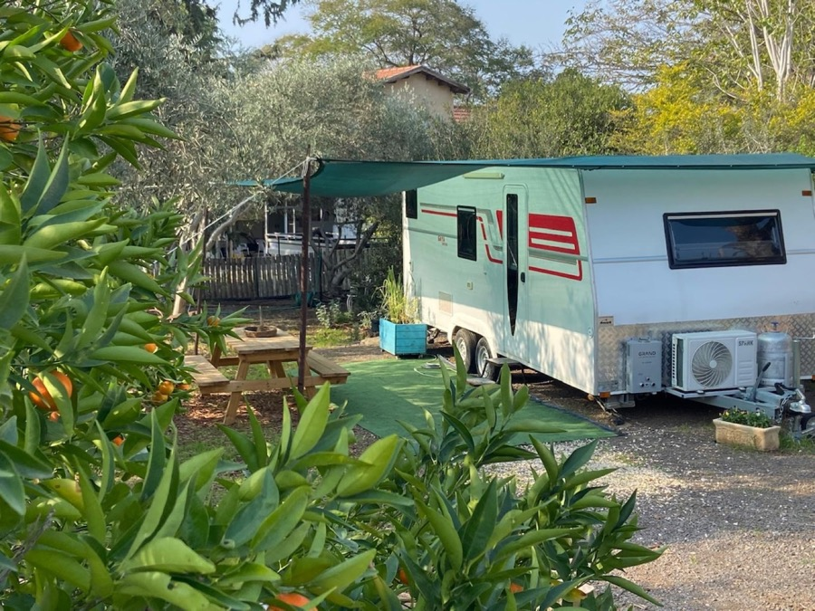
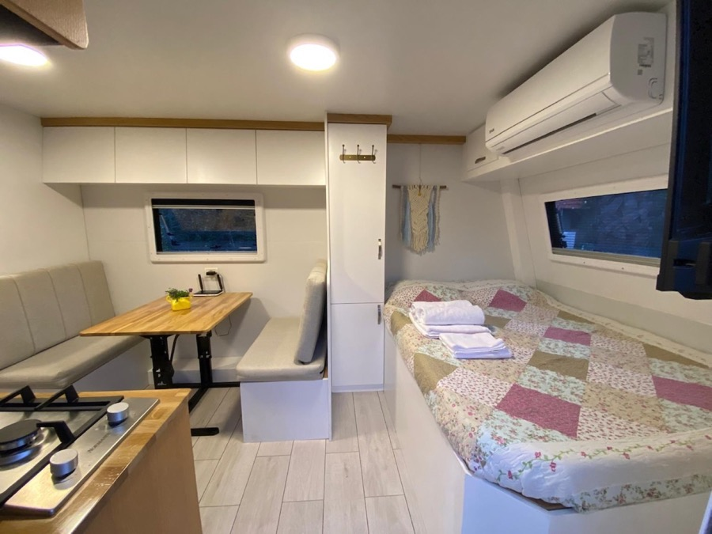
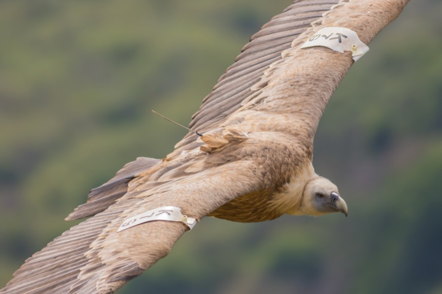
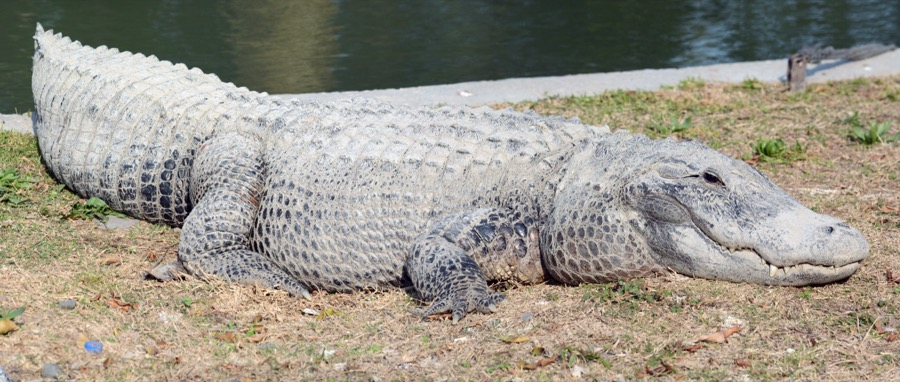
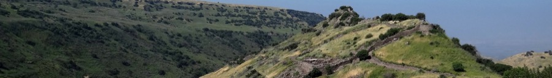

1. Fechas
Miércoles 9 al viernes 11 de diciembre de 2026 (2 noches en Janucá).
2. Salida y Regreso
Salida mié 9-dic a las 14:15 hrs desde Harish / Vuelta vie 11-dic ~13:10 hrs (con 2h 50m de holgura antes de velas de Shabat a las 16:05).
3. Dónde Dormimos
Olive GlampVan (caravana moderna de alta gama inmersa en huerto de olivos en Moshav Ma'ale Gamla, Golán).
4. Quiénes Viajan
2 adultos + 4 niños (10, 8, 6 y 3 años; 5 huéspedes cotizados, el más chico no paga).
5. Total Estimado
₪2.766 ILS todo incluido (rango ₪2.500 a ₪3.200 según paseos y entradas).
📌
A tener en cuenta
Si vamos a este viaje, no podríamos ir al bar mitzvá de David, el hijo de Tania (que se celebra el jueves 10 de diciembre).
⚠️ Advertencias Clave del Plan
GlampVan a recotizar para 9–11 dic: El valor de ₪1.434 (₪717/noche) corresponde a la tarifa base regular de Airbnb. Al momento de confirmar la reserva, hay que recotizar las fechas exactas del 9 al 11 de diciembre en la plataforma antes de pagar.
Capacidad y pasajeros (5 vs 6 personas): En el viaje somos 6 en total (2 adultos + 4 niños). En la web de Airbnb la caravana tiene un tope formal de 4 huéspedes, pero el anfitrión (Ori) autoriza expresamente al 5º huésped en el comedor abatible para niño. El más chico (3 años) no paga ni cuenta formalmente como huésped en la van ni en parques. Al reservar se seleccionan 4 personas y se le avisa por mensaje al host.
Velas de Janucá AFUERA: Por protocolo de seguridad de las caravanas, está prohibido prender fuego o velas adentro. Se enciende en el patio del huerto a las ~16:35 hrs con una caja de vidrio protectora antiviento.
📋 Datos Esenciales
Resumen Ejecutivo del Viaje
Una escapada diseñada con precisión para combinar emoción para los niños, comodidad familiar y respeto riguroso de tiempos y halajá.

Visión General
Colinas del Golán con el Monte Hermón de fondo en invierno.
👥 Quiénes viajan
Familia (6 personas)
2 adultos + 3 niños escolares (10, 8, 6 años) + 1 niño de 3 años. Cotizado para 5 huéspedes.
⏱️ Salida desde Harish
Miércoles 9-Dic ~14:15 hrs
Desde Mitzpe Ilan en auto propio. Llegada a Ma'ale Gamla a las 16:00 antes de la puesta de sol.
🕯️ Janucá en destino
6ª y 7ª noche
Puesta de sol ~16:35. Encendido afuera en caja de vidrio con fogata familiar.
🏡 Retorno para Shabat
Viernes 11-Dic 13:00–13:15 hrs
Llegada a Harish a más tardar 13:30. Velas de Shabat Janucá a las 16:05 (¡con 2h 45m de holgura!).
Regla de oro: Ningún tramo supera los 35 minutos una vez en el Golán, permitiendo ritmos amables para los más chicos y cero estrés antes de Shabat.
✡️ Logística Kosher & Janucá
Kashrut, Velas y Minyán
Todo resuelto para disfrutar con tranquilidad espiritual y práctica.
Espiritualidad & Halajá
Encendido con aceite de oliva en el huerto: pura atmósfera de Janucá.
🕯️ Velas de Janucá AFUERA
Caja de vidrio protectora
La caravana prohíbe fuego interior. Se prende en el patio del huerto a las ~16:35 en januquiá cerrada antiviento.
🍳 Comida Kosher
Llevada de casa + Van
Cocina a gas, microondas y refrigerador disponibles. Ollas y vajilla propia desde Harish.
🛒 Supermercado Mehadrin
A.D. Amar (Bnei Yehuda)
A solo 14 min al sur (Ruta 789). Gran surtido LeMehadrin. Alternativa: Shufersal Deal en Katzrin (20 min).
🕍 Minyán Jabad Cercano
Bnei Yehuda & Jispin
Jabad Bnei Yehuda (Rabino Mendy Gorelik, Shajarit 07:15). En Jispin (a 10 min): sinagoga central con minyanim continuos.
Llevar sí o sí: Januquiá metálica apta para caja de vidrio o farol antiviento, aceite de oliva puro / velitas gruesas y fósforos largos.
🗺️ Navegación y Rutas
Ruta y Distancias en Auto
Ubicación estratégica sobre la ladera este del Kinneret con accesos directos por carreteras asfaltadas y seguras.
🛣️ Tramo de Ida
112 km (~1h 45m)
Mitzpe Ilan → Ruta 65 (Afula) → Cruce Golani → Ruta 77 (Tiberias) → Ruta 789 a Ma'ale Gamla.
🦅 A Parque Gamla
12 km (15 min)
Subida panorámica directa por Ruta 789 / Ruta 808 hacia la meseta central.
🏛️ A Katzrin & Ein Zivan
18 a 38 km (20 a 35 min)
Carreteras amplias y despejadas (Ruta 808 y Ruta 91). Hermosos paisajes volcánicos.
🏠 Tramo de Vuelta
95 km (~1h 20m)
Descenso sur por Ruta 98/90 (Tzemach) hacia Ruta 65 directo a Harish. Salida 11:45 → Llegada 13:10.
Seguridad al volante: El auto queda estacionado dentro del predio privado cerrado de la finca en Ma'ale Gamla. Cero problemas de estacionamiento.
🚐 Alojamiento Estrella
Olive GlampVan (Ma'ale Gamla)
₪1.434total 2 noches
Caravana moderna de alta gama inmersa en un huerto privado de olivos. Calificada con ★4.96 (Superhosts Ori y Revital).
Exterior
Finca privada de olivos en Ma'ale Gamla con vista al atardecer.

Dormitorio
Cama matrimonial acogedora y camarote litera para niños.

5ª Cama Comedor
Mesa de comedor que se convierte fácilmente en cama para niño.
🛏️ Camas (hasta 5 pers.)
1 matrimonial + litera + comedor
Cama doble, camarote de 2 plazas, sofá cama y mesa comedor abatible especial para niño de 3 años.
🔥 Clima & Agua Caliente
AC potente + Gas continuo
Aire acondicionado frío/calor inverter y calentador a gas que nunca se queda sin agua caliente en la ducha.
🍳 Cocina & Patio
Kitchenette + Fogón exterior
Encimera a gas, microondas, refrigerador/congelador, cafetera, fogata (fire pit) y parrilla al aire libre.
⏰ Check-in / Out & Cancelación
In: 15:00 / Out: 11:00
Cancelación gratuita hasta el 1 de dic 2026. No se cobra tasa de limpieza ni comisión Airbnb adicional.
Detalle de reserva: En Airbnb se cotiza para 4 huéspedes (₪717/noche = ₪1.434 total) y se le envía mensaje a Ori avisándole del 5º huésped (el niño de 3 años en el comedor abatible, tal como autoriza su ficha).
Viaje directo, instalación relajada y la magia de encender la 6ª vela bajo el cielo estrellado del Golán.

Día 1 • Mié 9 Dic
Fogón y patio iluminado entre los olivos de Ma'ale Gamla.
14:15
Partida desde Harish / Mitzpe Ilan
Salida en auto con bolsos, comida lista y cajas de Janucá. Manejo tranquilo de 112 km por la Ruta 65/77.
16:00
Llegada a Ma'ale Gamla & Check-in
Recepción personal por los anfitriones (Ori/Revital). Acomodo de camas y encendido de la calefacción.
16:35
Puesta de Sol: 6ª Vela de Janucá
Encendido familiar AFUERA en el huerto con januquiá protegida en caja de vidrio. Bendiciones, cantos y emoción.
17:15+
Fogata, Sufganiot y Cena Caliente
Prender el fogón (fire pit), asar malvaviscos kosher, comer sufganiot con chocolate caliente y cena casera reconfortante.
Para los niños de 3 a 10 años: Sentirse exploradores en su propia caravana y ver saltar las chispas del fuego bajo los olivos es pura emoción.
🦅 Naturaleza Salvaje
₪98total familia
Reserva Natural Gamla
La mayor colonia de buitres de Israel y la cascada perenne más alta del país (51 metros de caída).

Día 2 • Jueves Mañana
Buitre leonado planeando sobre los acantilados de Gamla.
🔭 Qué verán
Buitres gigantes & Cascada
Mirador con telescopios fijos para observar buitres leonados planeando a metros de distancia sobre el abismo.
👶 Ideal niños 3 a 10 años
Sendero plano y seguro
El sendero al observatorio es ancho, plano y apto para cochecitos. Los niños quedan boquiabiertos con la envergadura de las aves.
📍 Distancia y Tiempo
12 km (15 min en auto)
Duración estimada: 2 horas (09:30 a 11:30 hrs). Prácticamente al lado del van.
🎟️ Tarifas INPA 2026
Adulto ₪28 | Niño ₪14
Niño de 3 años entra gratis. Total familia: 2x₪28 + 3x₪14 = ₪98 (¡o $0 si tienen tarjeta Matmón!).
En diciembre: Tras las primeras lluvias de invierno, la cascada Gamla cae con fuerza impresionante y los valles lucen verdes y llenos de vida.
🏛️ Historia Viva de Janucá
₪110total familia aprox.
Pueblo Talmúdico de Katzrin
Aldea judía reconstruida de los tiempos de la Mishná con prensa de aceite de oliva auténtica.
Día 2 • Jueves Mediodía
Molino y prensa milenaria de aceite de oliva en el Parque Katzrin.
🫒 Conexión con Janucá
Prensado tradicional de aceite
Moler aceitunas y accionar la prensa de viga de basalto para entender cómo se producía el aceite puro de la Menorá.
🏠 Aventura para niños
Túnicas bíblicas & Hornos
Recorrer la Casa de Abun, disfrazarse de sabios talmúdicos, tocar basalto milenario y hornear pan en hornos de barro.
📍 Distancia y Duración
18 km (20 min)
A 15 min de Gamla hacia el norte. Duración: 1h 45m (12:15 a 14:00 hrs). Almuerzo picnic en sus bancos sombreados.
🎟️ Tarifas 2026
Adulto ₪25 | Niño ₪20
Niño de 3 años gratis. Total familia: 2x₪25 + 3x₪20 = ₪110. Incluye entrada a la sinagoga antigua de basalto.
Ambiente techado: Gran parte de la aldea tiene salas de piedra techadas donde refugiarse cálidamente si cae alguna llovizna pasajera.
🍫 Dulce Calidez de Invierno
₪320total taller familia aprox.
Chocolatería De Karina (Ein Zivan)
Fábrica boutique artesanal con certificación Kosher Mehadrin (Badatz Manchester / Jalav Yisrael & Pareve).
Día 2 • Jueves Tarde
Chocolatería Boutique De Karina en Kibutz Ein Zivan.
👩🍳 Taller Creativo Infantil
Armar sus propios chocolates
Cada niño recibe moldes, mangas de chocolate fundido y decoraciones para crear figuras que se llevan en caja de regalo.
☕ Experiencia familiar
Chocolate caliente espeso
Recorrido vidriado por la fábrica, película breve y cafetería con chocolate caliente gourmet, perfecto para la tarde fría.
📍 Distancia y Horario
24 km desde Katzrin (25 min)
Duración: 1h 15 min (14:45 a 16:00 hrs). Llegada perfecta para regresar al van antes de la puesta de sol.
🎟️ Tarifas Taller 2026
Niño ~₪75 | Adulto ~₪25-35
3 niños en taller (~₪225) + adultos/guagua en visita (~₪95) = ~₪320 ILS. Requiere reserva previa online.
El hit del viaje: A los niños de 3 a 10 años les fascina ensuciarse los dedos con chocolate y salir con su propio "gelt" de Janucá hecho por ellos mismos.
🔥 Magia Nocturna
7ª Vela, Torneo de Dreidel y Banquete
Una velada íntima de celebración familiar para culminar el día más activo del viaje.
Día 2 • Jueves Noche
Atardecer dorado sobre el Mar de Galilea visto desde Ma'ale Gamla.
16:30
Regreso al van & Puesta de Sol
Llegada a Ma'ale Gamla justo a tiempo mientras el sol tiñe de púrpura las aguas del Kinneret.
16:35
Encendido solemne de la 7ª Vela
Siete llamitas bailando en la caja de vidrio en medio del huerto. Canciones de Janucá entonadas por toda la familia.
17:30
Gran Torneo Familiar de Sevivón (Dreidel)
Jugando por el chocolate recién fabricado en De Karina. Risas garantizadas para los niños de 3 a 10 años.
18:30+
Cena especial & Parrilla en el GlampVan
Usar la cocinilla y la parrilla exterior. Noche tibia y abrigada dentro de la caravana con calefacción inverter.
Descanso pleno: Los niños caen rendidos y felices tras un día lleno de aventuras, aire puro y emociones.
🐊 Aventura Final & Regreso Seguro
13:10en Harish garantizado
Día 3: Hamat Gader y Vuelta a Tiempo
Check-out matutino, visita entretenida en el Valle de Yarmuk y llegada con holgura para preparar Shabat Janucá.

Día 3 • Viernes Mañana
Granja de cocodrilos y aguas termales en Hamat Gader.
⏰ 09:30 Check-out
Despedida de Ma'ale Gamla
Dejar la caravana impecable, cargar maletas y bajar hacia el sur bordeando el lago (30 min de viaje).
🐊 10:00 a 11:30 Hamat Gader
Cocodrilos gigantes & Termas
Caminar por las pasarelas sobre cientos de cocodrilos y caimanes. Alternativa gratis: Paseo y muelle de Ein Gev.
🚗 11:45 Salida hacia Harish
95 km expeditos (~1h 20m)
Por Ruta 90/65 en sentido contrario al tráfico pesado. Ruta completamente llana y segura.
🕯️ 13:10 Llegada a Harish
2h 50m antes de Shabat
Velas de Shabat Janucá a las 16:05. Tiempo de sobra para duchas, ordenar y recibir el Shabat en calma.
Tarifas Hamat Gader: Entrada general ~₪108 (con cupones de clubes baja a ~₪65-75 c/u). Si se prefiere no pagar entrada el viernes, el paseo por el puerto de Ein Gev y mirador es 100% gratuito.
🌦️ Condiciones de Diciembre
Pronóstico Típico & Qué Empacar
Días templados y luminosos; tardes y noches frías y ventosas ideales para fogatas.

Clima & Preparativos
Ambiente fresco, cielos limpios y aire puro en diciembre.
🌡️ Ma'ale Gamla (cota media)
Día 17–19°C | Noche 8–10°C
Agradable con sol; fresco y con brisa en cuanto cae la tarde. Sin riesgo de nieve.
⛰️ Alto Golán (Ein Zivan)
Día 11–13°C | Noche 4–6°C
Más frío. Se agradece la calefacción y los recintos cerrados como la chocolatería.
Checklist Recomendado:
✓
Vestimenta en capas (estilo cebolla): Camisetas térmicas, polar y parkas cortaviento/impermeables.
✓
Accesorios de abrigo: Gorros de lana, bufandas y guantes para los niños para las velitas y fogatas nocturnas.
✓
Kit de Janucá: Januquiá en caja de vidrio o farol cerrado, aceite de oliva/velas, fósforos largos y sevivonim.
✓
Equipamiento útil: Linternas frontales para el huerto, termos para café/té caliente y juegos de mesa.
💰 Transparencia Total
₪2.766total estimado
Presupuesto y Desglose de Costos
Cotización calculada para 5 huéspedes (2 adultos + 3 niños de pago; el niño de 3 años entra gratis en alojamiento y parques).
🚐 Alojamiento: Olive GlampVan₪1.434
2 noches (9 al 11 dic) en Ma'ale Gamla. Tarifa directa Airbnb sin cobro de limpieza extra.
⛽ Bencina (Auto propio)₪204
~340 km totales (Harish ↔ Golán + paseos locales) a 8 l/100km @ ~₪7,50/litro.
🦅 Entrada Reserva Gamla₪98
Tarifas oficiales INPA: 2 adultos (₪56) + 3 niños (₪42). Niño de 3 años gratis (¡o $0 con pase Matmón!).
🏛️ Parque Talmúdico Katzrin₪110
Entrada combinada: 2 adultos (₪50) + 3 niños (₪60). Niño de 3 años gratis.
🍫 Taller Chocolate De Karina₪320
Taller infantil para 3 niños (~₪75 c/u) + visita adultos y guagua (~₪95).
🛒 Comida Kosher & Provisiones₪450
Llevado de casa + compras frescas en supermercado Mehadrin Bnei Yehuda.
🪵 Leña de fogata, extras y café₪150
Bolsa de leña seca para el fire pit, malvaviscos kosher, imprevistos.
Total Plan Base₪2.766
Plan con paseo libre en Kinneret el viernes. Si se opta por Hamat Gader con cupones familiares, el total sube a ~₪3.150 ILS.
📊 Rango Estimado Global
₪2.500 a ₪3.200 ILS
El límite inferior aplica si la familia tiene tarjeta Matmón de parques; el superior si se incluye Hamat Gader con entradas completas el viernes.
💳 Flexibilidad de Pago
Cancelación $0 hasta 1-Dic
Permite congelar la reserva hoy mismo en Airbnb sin riesgo financiero ante imprevistos climáticos o escolares.
⏱️ Organización Impecable
Cronograma Completo del Viaje
Planificación horaria diseñada para no correr en ningún momento y respetar cada hito de Janucá y Shabat.
MIÉRCOLES 9 DIC6ª Vela
14:15
Salida desde Harish en auto.
16:00
Llegada y check-in en Olive GlampVan.
16:35
Puesta de sol: 6ª vela afuera en caja de vidrio.
17:15
Fogata, sufganiot y cena caliente.
20:00
Noche tibia en la caravana climatizada.
JUEVES 10 DIC7ª Vela
08:30
Desayuno campestre entre olivos.
09:30
Reserva Gamla: Buitres y cascada (15m auto).
12:15
Pueblo Katzrin: Prensa de aceite talmúdica.
14:45
De Karina: Taller de chocolate en Ein Zivan.
16:35
Puesta de sol: 7ª vela en el huerto.
18:00
Torneo de Dreidel y parrillada familiar.
VIERNES 11 DICShabat Janucá
08:30
Desayuno y armado de bolsos.
09:30
Check-out y bajada hacia el Kinneret Sur.
10:00
Paseo: Hamat Gader o muelle de Ein Gev.
11:45
Salida en auto rumbo a Harish (95 km).
13:10
Llegada a Harish: ¡Listo con holgura!
16:05
Velas de Shabat Janucá en casa.
🚀 Plan de Acción Inmediato
Lo que Falta para Reservar
Solo 4 pasos sencillos para asegurar estas fechas codiciadas de vacaciones de Janucá.
Paso Final
Mesa de comedor que se abate fácilmente como 5ª cama para el niño pequeño.
1
Reservar en Airbnb el Olive GlampVan:
Seleccionar 4 huéspedes (precio ₪1.434 por las 2 noches) y fijar fechas del 9 al 11 dic 2026. Cancelación gratuita disponible hasta el 1 de diciembre.
2
Enviar mensaje al host (Ori):
Avisarle cordialmente que viajan 2 adultos y 4 niños (el menor duerme en el comedor abatible), consultando por la calefacción y uso de la cocinilla kosher.
3
Agendar el Taller en De Karina:
Reservar 3 cupos infantiles para el jueves 10-dic a las 14:45 hrs en su web oficial (de-karina.co.il) para no quedarse sin cupo en Janucá.
4
Preparar el kit de Janucá en casa:
Comprar o alistar la caja de vidrio cerrada para encender la januquiá en el patio y cocinar con anticipación los platos kosher congelados.
 Espiritualidad & Halajá
Espiritualidad & Halajá
 Exterior
Exterior
 Alternativa 1
Alternativa 1
 Día 2 • Jueves Mediodía
Día 2 • Jueves Mediodía
 Día 2 • Jueves Tarde
Día 2 • Jueves Tarde
 Día 2 • Jueves Noche
Día 2 • Jueves Noche